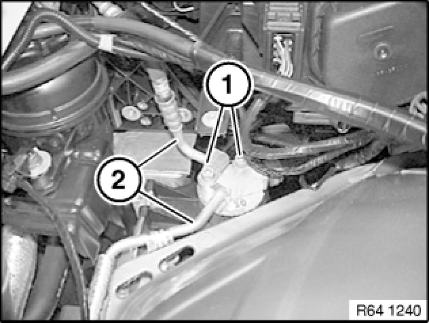
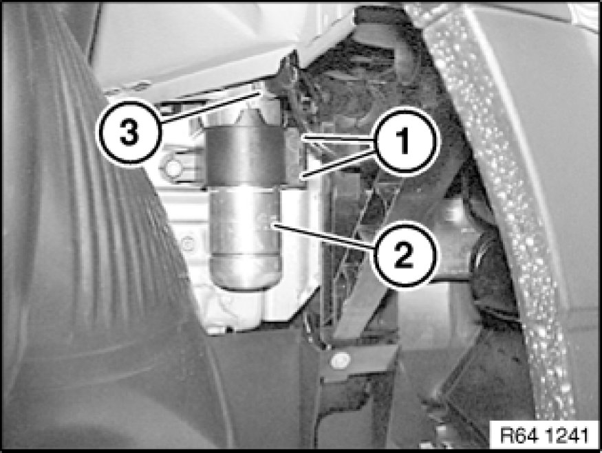

Removing and Installing/Replacing Dryer Bottle for Air Conditioner
64 53 510 - Removing and installing/replacing dryer bottle for air conditioner

Warning!
Risk of injury!
Refrigerant circuit is under high pressure!
Follow safety instructions for handling R 134a refrigerant Instructions for Handling Refrigerant R 134a.
Avoid contact with refrigerant and refrigerant oil.
Follow safety instructions for handling refrigerant oil Instructions for Handling Refrigerant Oil (for Refrigerant R 134a).

Important!
Risk of damage!
Restart engine only when A/C system has been correctly filled.
Follow instructions Removal and Replacement for opening and replacing parts in refrigerant circuit!
If A/C system is opened for more than 24 hours:
Replacing drier insert for A/C system

Necessary preliminary tasks:
- Drawing off, evacuating and filling the A/C system Drawing off, Evacuating and Filling A/C System (R 134a) are not included in the time value given for this work operation
- Release fluid reservoir Service and Repair for windscreen washer system and place to one side

Release screws (1) and remove refrigerant lines (2).
Installation Note:
Replace all sealing rings and moisten with refrigerant oil.
Tightening torque 64 53 1AZ [1][2]Expansion Valve.

Partially remove front right wheel arch cover Service and Repair.
Slacken screws (1) and remove dryer bottle (2) towards top.
Disconnect plug connection (3).
Installation Note:
Make sure dryer bottle is securely seated.
After installation:
- Evacuate and fill A/C system Drawing off, Evacuating and Filling A/C System (R 134a)
- If necessary, top up fluid reservoir for windscreen washer unit